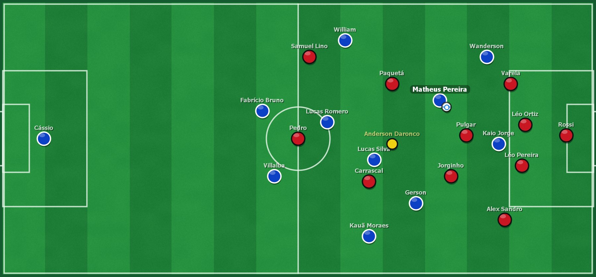

Lance a lance com o motor
Gols, cartões, faltas com barreira, pênaltis, lesões e substituições aparecem no campo no mesmo momento em que o Brasfoot os registra.
TEMPORADA 2026 · O JOGO CONTINUA
704 clubes. Infinitas histórias para escrever.
Uma nova dimensão para o jogo que nunca saiu de campo — com 301 elencos atualizados no Brasil e na Europa.
Requer sua própria instalação do Brasfoot 22–23.

Um mundo de possibilidades.
Brasil e Europa na temporada 2026.
Sem cadastro. Sua paixão basta.
01 / A GRANDE NOVIDADE
Um campo 2D na tela de partida original, entre o placar e os outros jogos, com os 22 jogadores, a bola e o árbitro acompanhando cada lance simulado pelo jogo. O motor continua sendo o do Brasfoot.
O campo animado não mexe no funcionamento original do jogo: o motor de simulação, as regras e os resultados são os mesmos do Brasfoot. A animação é montada apenas com informações que o próprio Brasfoot oferece durante a partida.
O campo anima sempre no ritmo normal. Em gols, pênaltis, cartões e lesões, a partida faz uma pausa curta para o lance acontecer no campo junto com o placar, e depois de um gol os jogadores voltam às posições antes da saída. O resto do jogo segue na velocidade escolhida no Brasfoot. Na média, são alguns segundos a mais por lance.
Gols, cartões, faltas com barreira, pênaltis, lesões e substituições aparecem no campo no mesmo momento em que o Brasfoot os registra.
Finalizações, desarmes, erros de passe e faltas acompanham as estatísticas oficiais da partida.
Formação pelas posições do elenco; estilo, marcação e foco de ataque mudam a movimentação.
Gramado conforme a condição do jogo, bola e árbitro com cores que não se confundem com os times.
Nada é sorteado por fora para decidir a partida: gols, cartões e placar vêm do motor do Brasfoot, e a animação apenas os representa.
No instalador, marque o Patch 2026, o campo animado ou os dois. Os backups permitem voltar atrás quando quiser.
Disponível desde a versão 2026.5.0. Feche o jogo, abra o Mega Patch e escolha o que instalar.
Quero o campo animado02 / COMECE POR AQUI
Um hub, um download. Abra o Mega Patch, encontre sua instalação do Brasfoot e escolha o que instalar. As próximas versões chegam pelo próprio hub.
Os 704 clubes do pacote, com 301 elencos completos atualizados no Brasil e na Europa. O campo animado e as ferramentas de atualização, backup e restauração no mesmo hub, que avisa quando sai uma versão nova e atualiza sem você baixar nada de novo.
Outro sistema? Todas as opções estão na seta ao lado.
Requer sua própria instalação do Brasfoot 22–23.
Os dados do arquivo estão disponíveis nas notas da versão mais recente.
Notas da versão mais recente ↗Sem cadastro. Sem pagamento obrigatório.
03 / SEU CLUBE, SEU UNIVERSO
Do Brasil para o mundo. Pesquise 704 clubes, 224 seleções nacionais e as competições mapeadas. Confira os elencos disponíveis e a origem dos participantes.
Carregando clubes, seleções e copas...
| EQUIPE | PAÍS | COMPETIÇÃO | ELENCO | JOGADORES | Detalhes |
|---|---|---|---|---|---|
| Conectando ao catálogo de clubes e seleções… | |||||
Transparência: 704 clubes e 224 seleções para pesquisa. As seleções não têm convocados catalogados; as copas refletem apenas os participantes mapeados, sem garantia de jogabilidade.
04 / EM CONSTANTE EVOLUÇÃO
Novidades do site e do patch, no mesmo lugar. Acompanhe o que mudou antes de começar a próxima temporada.
Site em branco e azul, mais leve de ler, com o campo animado ao vivo apresentado em detalhes.
05 / PAIXÃO COM TRANSPARÊNCIA
Elencos do Brasil e da Europa, posições específicas e nomes mais fáceis de ler. Quando uma fonte está incompleta, o elenco existente é preservado.
Listas atuais incluídas no pacote.
Séries A, B e C.
Elencos completos substituídos.
Posições ajustadas à função principal.
Fontes consultadas em 27 e 28/10/2026. Consultar a cobertura e as fontes ↗
Backup antes de escrever, conferência dos arquivos e restauração. Guarde uma cópia das suas carreiras antes de atualizar.
Fontes registradas, coleta diária e preservação do último snapshot quando uma fonte falha. Nenhum elenco é inventado para preencher lacunas.
Uma identidade nova para as ferramentas. O jogo original e suas mecânicas continuam sendo o centro da experiência.
POUCOS PASSOS. UMA NOVA TEMPORADA.
06 / ANTES DO APITO INICIAL
Sim. O download e todas as ferramentas são gratuitos. O Pix é opcional e não libera funcionalidades.
Não. O motor de simulação do Brasfoot continua o mesmo, e os resultados continuam sendo os dele. O campo animado é montado apenas com informações que o próprio Brasfoot oferece durante a partida: lances, estatísticas, escalações, táticas e condição do gramado.
Sim. O campo anima sempre no ritmo normal e fica sincronizado com o placar em qualquer velocidade. Em gols, pênaltis, cartões e lesões a partida faz uma pausa curta para o lance acontecer no campo junto com o placar; depois de um gol, os jogadores voltam às posições antes da saída. Isso acrescenta alguns segundos por lance. A melhor experiência é na velocidade Normal.
Não. Baixe o hub uma vez: ele se instala no seu usuário, com atalhos no Menu Iniciar e na área de trabalho. A cada abertura, o hub confere no GitHub a versão mais recente. Quando há patch novo, aparece o aviso com Ver novidades e Atualizar; quando o próprio hub tem versão nova, ele mostra o que mudou e se atualiza sozinho. Todo download é conferido pelo SHA-256 publicado antes de mexer no jogo.
Sim. Na área Remover do hub você tira o patch inteiro ou só uma parte: os elencos, a temporada 2026, o campo animado ou os escudos atualizados. Suas carreiras salvas não mudam e continuam abrindo com ou sem o patch, com todo o progresso.
Para baixar uma versão nova, precisa de internet. Sem conexão, o hub usa a última versão já baixada no computador, e você continua podendo jogar e restaurar backups.
Sim. No hub, marque apenas o campo animado. O Patch 2026 e o campo animado podem ser instalados juntos ou separados.
Não. Você precisa de sua própria instalação do Brasfoot 22–23. O hub baixa apenas instruções de atualização, nunca arquivos do jogo.
Há pacotes de atualização para os dois sistemas. O jogo requer Wine/CrossOver configurado à parte. A execução nessas plataformas ainda não foi verificada; confira os requisitos junto ao download.
O pacote atualiza 301 elencos completos: 60 brasileiros e 241 europeus. Outros clubes têm fontes parciais e conservam seus elencos. Características individuais ainda usam valores preservados ou estimados quando não há informação suficiente.
Mantenha uma cópia das suas carreiras antes de atualizar. A compatibilidade de saves depende das mudanças aplicadas, e a configuração da Série D é preservada. A regra de nomes com até duas palavras vale para todos os clubes.